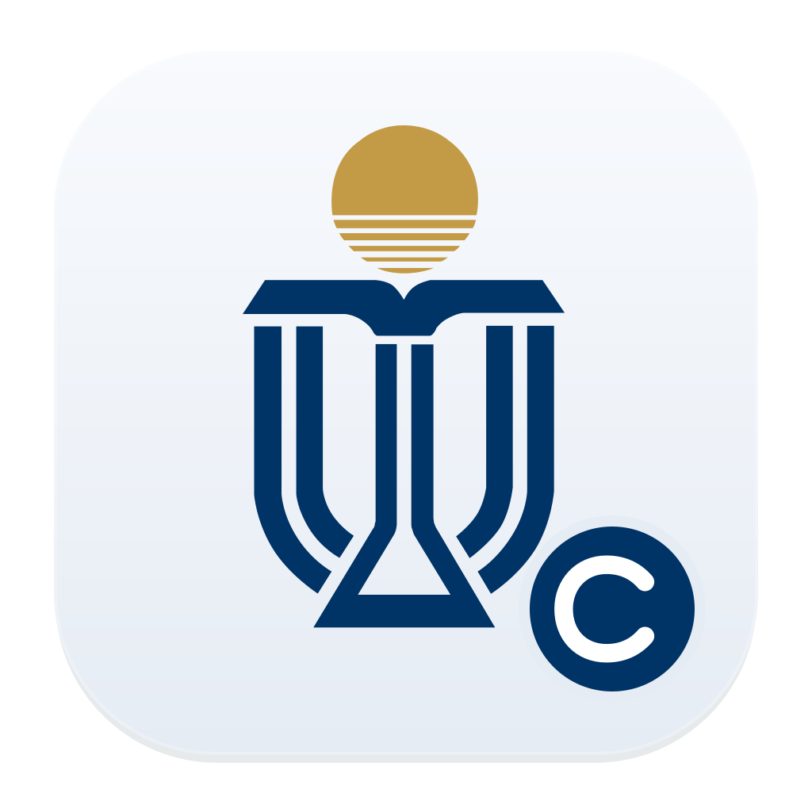

先同步
把课程，带到桌面。
首次打开，跟随指引选择语言和学校，再登录学校账号。课程、作业、公告和课件，会一起同步过来。
学校账号登录 · 课程信息自动整理CanvasC✓
课程同步3 / 3
M线性代数MATH101✓
C计算机科学CS102✓
D设计思维DESIGN201✓

Canvas 课程管理4.1你的 Canvas，回到一处。
无论在哪所大学，课程都值得被好好安排。
把 Canvas 里的作业、公告和课件，带到你的桌面。
通过学校开放的 Canvas API 同步课程、作业与课件。课程数据、设置和下载文件保存在本机。
查看开源代码 ↗macOS / Windows · 多校预设 · 插件按需开启
默认外观 · 虚构课程演示（含启用 AI 后的功能）
从一所大学，到更多校园
选择学校，使用原有账号登录 Canvas。
不同学校的课程数据与登录会话，分别保存。
11 所大学的 Canvas 预设，覆盖六大洲。入口已依据学校官方资料核实；NUS 已有用户反馈登录与功能正常。各校的账号访问、MFA 与 API 权限仍需分别验证。
每门课，都有自己的位置
同步、安排、准备下一课。每一项功能，都铺开给你看。
先同步
首次打开，跟随指引选择语言和学校，再登录学校账号。课程、作业、公告和课件，会一起同步过来。
学校账号登录 · 课程信息自动整理全部课程
先看最近一项截止，再看未来 30 天。不同课程用不同颜色，哪天要交什么，都放在一张月历里。
下一项截止 · 30 天月历Problem set 02 MATH101
进入一门课
点进课程，作业、公告、课件，三块看板一起呈现；启用 AI 插件后，还能查看课程结构分析。接下来，逐个看看。
基础三块看板 · AI 按需开启作业看板
什么时候交、要做什么，打开作业就能看。需要一点思路时，还能让 AI 帮你理解要求、拆出步骤。
查看作业要求 · 梳理完成思路公告看板
本周怎么上课、项目有什么变化，按时间整理。找一条公告，不用再翻一遍整门课。
课程通知 · 公告详情新增两道特征值练习。
周五课堂讨论项目进度。
阅读材料已放入课件。
课件看板
讲义、阅读材料和课堂文件，按课程放好。可以批量下载到电脑，之后用起来更顺手。
按课整理 · 批量下载↳ 保存到你选择的本地文件夹
课程结构分析
让 AI 帮你读课程资料，整理课程结构、评分构成与学习建议。面对一门新课，先知道从哪里着手。
课程导学 · 学习建议向量空间 → 线性映射 → 特征值 → 实际问题
01课程结构
02评分构成
03学习建议
虚构课程与界面演示 · AI 功能需启用可选插件
AI、小组件与皮肤按需启用。保留熟悉的课程管理，只加上你需要的功能。
通过学校登录会话读取 Canvas API，在本机整理课程与截止日期，准备好下一课。
还有一种更顺手的方式
通过 MCP 服务连接后，Codex 等支持接入的 AI，
就能直接帮你获取课程和作业。省去来回复制，也不用逐门翻找。
直接问课程、作业与截止时间。
MCP 读取最近一次同步的课程缓存。
继续追问要求，确定先做哪一项。
七天内有什么作业？
读取本机最近同步的课程
MATH101 · Problem set 02
CS102 · Reading response
DESIGN201 · Project proposal
虚构交互演示 · MCP 服务需单独连接
先安装 Canvas 课程管理，登录并同步课程。按连接说明完成一次 MCP 服务配置，再把它连接到支持接入的 AI，就可以直接在聊天里查询。
Codex 已完成连接测试。其他 AI 能否接入，取决于它是否支持自定义 MCP 服务。查询已同步的信息时，读取的是本机课程缓存；需要重新同步时，保持桌面应用运行。
查看连接说明 ↗关于兼容性、登录与数据的几个问题。